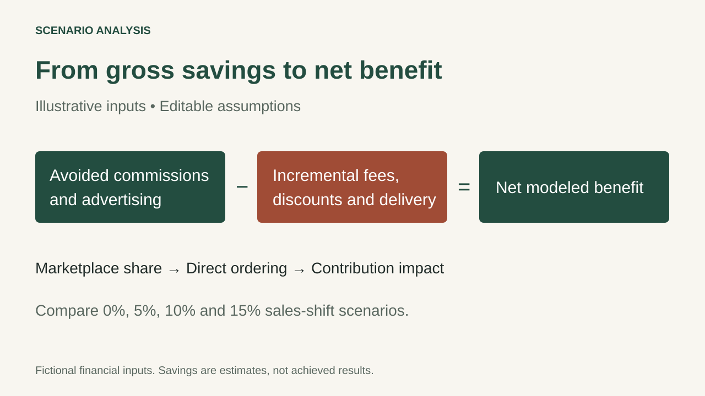

Sweet Bamboo internship
Marketplace commission analysis
Working through the economics of direct ordering and restaurant delivery.
Data note: Sales amounts and rate inputs in the public workbook are illustrative. The savings are scenario calculations, not achieved business results.
The question I wanted to answer
If some marketplace customers ordered directly, how much could the restaurant save? I also looked at a separate option: keeping the order on the marketplace but using the restaurant’s own driver, which could lower the platform commission.
How I set up the comparison
I separated sales shifted to direct ordering from marketplace sales that stayed on the platform. That prevents the model from counting the same commission saving twice.
The scenarios compare 0%, 5%, 10% and 15% of marketplace sales moving to direct ordering. Total sales stay constant, so the comparison isolates the channel and cost assumptions.
Why the extra costs matter
Avoided commission is not the final benefit. Direct orders can bring payment fees, discounts and delivery costs. The public version includes these assumptions so a manager can compare gross savings with the remaining benefit.

What I would check before using the estimate
I would confirm provider terms, which orders qualify for own-driver delivery and the actual extra delivery cost. I would also check whether reported sales already exclude commission, so it is not deducted twice.
The model assumes customers move between channels without changing total sales. A real test would need to track whether customers completed those direct orders and whether discounts or delivery changes affected contribution.
File
Channel scenario model
Commission savings workbook
Editable assumptions and gross-to-net savings calculations.